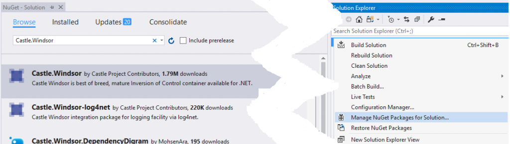

| | House | Parking | Events | Detroit Events | Cafes | Blogs & Updates | About | Blog | | |
|
|
||||||
|
Dependency Injection in .NET MVC 5 and WebApi
Jul 13, 2017
YourApp.Web project should be a .NET MVC web project, and all projects should output a DLL with the same name as the project. The remaining projects should be class libraries. Service should reference Interface, Web should reference Service and Windsor.
Castle.Windsor as our DI container library. Find this package on NuGet and add it to your project.

Castle Windsor NuGetYourApp.Interface.
namespace YourApp.Interface {
public interface IDemoService {
string SayHello();
}
}YourApp.Service.
namespace YourApp.Service {
public class DemoService : IDemoService {
public string SayHello(){
return "Hello";
}
}
}<section name="castle" type="Castle.Windsor.Configuration.AppDomain.CastleSectionHandler, Castle.Windsor" />
castle section. Add one component tag for each service you will be using. You can set the lifestyle as transient for now.
<castle>
<components>
<component id="Demo" service="YourApp.Service.IDemoService, YourApp.Interface" type="YourApp.Service.DemoService, YourApp.Service" lifestyle="transient"></component>
</components>
</castle>
IActionInvoker is a little more special. What we're doing here is specifying our own custom implementation, as well as passing a parameter to the constructor (the parameter is the DI container). You'll see why we have to do this later.
There are two methods. One registers for the current assembly, which we won't be using. The other registers using a specified assembly, which we will pass from our web project. The second method is the one you should be concerned with. The first is just a default which implements the necessary interface.
using Castle.MicroKernel.Registration;
using Castle.MicroKernel.SubSystems.Configuration;
using Castle.Windsor;
using System;
using System.Collections.Generic;
using System.Linq;
using System.Reflection;
using System.Web;
using System.Web.Http.Controllers;
using System.Web.Mvc;
namespace YourApp.Windsor {
public class ServiceInstaller : IWindsorInstaller {
public void Install(IWindsorContainer container, IConfigurationStore store) {
container.Register(Classes.FromThisAssembly()
.BasedOn<IController>().LifestyleTransient());
container.Register(Classes.FromThisAssembly()
.BasedOn<IHttpController>().LifestyleTransient());
container.Register(Classes.FromThisAssembly()
.BasedOn<FilterAttribute>().LifestyleTransient());
container.Register(Component.For<IActionInvoker>()
.ImplementedBy<WindsorActionInvoker>()
.DependsOn(
Dependency.OnValue("container", container)
).LifestyleTransient());
container.Install(Castle.Windsor.Installer.Configuration.FromAppConfig());
}
public void InstallFromAssembly(
IWindsorContainer container,
IConfigurationStore store,
Assembly assembly
) {
container.Register(Classes.FromAssembly(assembly)
.BasedOn<IController>().LifestyleTransient());
container.Register(Classes.FromAssembly(assembly)
.BasedOn<IHttpController>().LifestyleTransient());
container.Register(Classes.FromAssembly(assembly)
.BasedOn<FilterAttribute>().LifestyleTransient());
container.Register(Component.For<IActionInvoker>()
.ImplementedBy<WindsorActionInvoker>()
.DependsOn(
Dependency.OnValue("container", container)
).LifestyleTransient());
container.Install(Castle.Windsor.Installer.Configuration.FromAppConfig());
}
}
}
using Castle.MicroKernel.Registration;
using Castle.MicroKernel.SubSystems.Configuration;
using Castle.Windsor;
using YourApp.Interface;
using YourApp.Windsor;
using System;
using System.Collections.Generic;
using System.Linq;
using System.Reflection;
using System.Web;
using System.Web.Http.Controllers;
using System.Web.Mvc;
namespace YourApp.Web.Windsor {
public class WebServiceInstaller : ServiceInstaller, IWindsorInstaller {
new public void Install(IWindsorContainer container, IConfigurationStore store) {
InstallFromAssembly(container, store, Assembly.GetExecutingAssembly());
}
}
}
global.asax.cs.
protected void Application_Start() {
// install windsor (find our class which implements IWindsorInstaller, and calls the Install method)
Container = new WindsorContainer();
Container.Install(FromAssembly.This());
}
using Castle.MicroKernel;
using Castle.Windsor;
using System;
using System.Collections.Generic;
using System.Linq;
using System.Web;
using System.Web.Mvc;
using System.Web.Routing;
namespace YourApp.Windsor {
public class WindsorControllerFactory : DefaultControllerFactory {
private readonly IWindsorContainer _Container;
public WindsorControllerFactory(IWindsorContainer container) {
_Container = container;
}
public override void ReleaseController(IController controller) {
_Container.Release(controller); // The important part: release the component
}
protected override IController GetControllerInstance(
RequestContext requestContext,
Type controllerType
) {
if (controllerType == null) {
throw new HttpException(404,
string.Format(
"The controller for path '{0}' could not be found.",
requestContext.HttpContext.Request.Path
));
}
Controller controller = (Controller)_Container.Resolve(controllerType);
// new code
if (controller != null) {
// Don't worry about this yet. This will help us inject
//dependencies into our action filters later
controller.ActionInvoker = _Container.Resolve<IActionInvoker>();
}
return controller;
}
}
}
Resolve method is what injects our dependencies into the constructor.
protected void Application_Start() {
// install windsor
Container = new WindsorContainer();
Container.Install(FromAssembly.This());
// use new controller factory
ControllerBuilder.Current.SetControllerFactory(new WindsorControllerFactory(Container));
}
Resolve method to inject the properties into the constructor.
To solve this problem, we will use the extension method below, which injects the services into an action filter for every matching public property.
using Castle.MicroKernel;
using Castle.MicroKernel.ComponentActivator;
using System;
using System.Collections.Generic;
using System.Linq;
using System.Reflection;
using System.Web;
namespace YourApp.Windsor {
public static class WindsorExtension {
public static void InjectProperties(this IKernel kernel, object target) {
var type = target.GetType();
var props = type.GetProperties(BindingFlags.Public | BindingFlags.Instance);
foreach (var property in props) {
if (property.CanWrite && kernel.HasComponent(property.PropertyType)) {
var value = kernel.Resolve(property.PropertyType);
try {
property.SetValue(target, value, null);
} catch (Exception ex) {
var message = string.Format(
@"Error setting property {0} on type {1}.
See inner exception for more information.",
property.Name, type.FullName
);
throw new ComponentActivatorException(message, ex, null);
}
}
}
}
}
}
using Castle.Windsor;
using System;
using System.Collections.Generic;
using System.Linq;
using System.Web;
using System.Web.Mvc;
namespace YourApp.Windsor {
public class WindsorActionInvoker : ControllerActionInvoker {
readonly IWindsorContainer container;
public WindsorActionInvoker(IWindsorContainer container) {
this.container = container;
}
protected override ActionExecutedContext InvokeActionMethodWithFilters(
ControllerContext controllerContext,
IList filters,
ActionDescriptor actionDescriptor,
IDictionary<string, object> parameters) {
foreach (IActionFilter actionFilter in filters) {
container.Kernel.InjectProperties(actionFilter);
}
return base.InvokeActionMethodWithFilters(
controllerContext,
filters,
actionDescriptor,
parameters
);
}
protected override AuthorizationContext InvokeAuthorizationFilters(
ControllerContext controllerContext,
IList filters,
ActionDescriptor actionDescriptor
) {
foreach (IAuthorizationFilter authFilter in filters) {
container.Kernel.InjectProperties(authFilter);
}
return base.InvokeAuthorizationFilters(
controllerContext,
filters,
actionDescriptor
);
}
}
}
controller.ActionInvoker = _Container.Resolve<IActionInvoker>();.
The _Container.Resolve call correctly calls our custom action invoker because we registered it in our installer at the beginning of the tutorial.
using Castle.MicroKernel;
using Castle.Windsor;
using System;
using System.Collections.Generic;
using System.Linq;
using System.Web;
using System.Web.Http.Dependencies;
namespace YourApp.Windsor {
public class WindsorDependencyResolver : System.Web.Http.Dependencies.IDependencyResolver {
private readonly IWindsorContainer _container;
public WindsorDependencyResolver(IWindsorContainer container) {
if (container == null) {
throw new ArgumentNullException("container");
}
_container = container;
}
public object GetService(Type t) {
return _container.Kernel.HasComponent(t) ? _container.Resolve(t) : null;
}
public IEnumerable<object> GetServices(Type t) {
return _container.ResolveAll(t).Cast<object>().ToArray();
}
public IDependencyScope BeginScope() {
return new WindsorDependencyScope(_container);
}
public void Dispose() {
}
}
}
protected void Application_Start() {
// install windsor
Container = new WindsorContainer();
Container.Install(FromAssembly.This());
// resolve references for API controllers
// adding a collection sub-resolver resolves things like List when you've only mapped Type.
// thismay not be needed, but you should test your code with and without it to be sure
Container.Kernel.Resolver.AddSubResolver(new CollectionResolver(Container.Kernel, true));
// replace actual dependency resolver with our own
var dependencyResolver = new WindsorDependencyResolver(Container);
GlobalConfiguration.Configuration.DependencyResolver = dependencyResolver;
// use new controller factory
ControllerBuilder.Current.SetControllerFactory(new WindsorControllerFactory(Container));
}
using System;
using System.Collections.Generic;
using System.Diagnostics;
using System.Linq;
using System.Reflection;
using System.Web;
using System.Web.Mvc;
using System.Web.Security;
using YourApp.Interface;
namespace YourApp.Web.Controllers {
public class HomeController : BaseController {
private readonly IDemoService _DemoService;
public HomeController() {
}
public HomeController(IDemoService demoService) {
_DemoService = demoService;
}
//... actions here
}
}
_DemoService in any of your action methods. You can also easily replace the implementation, or add new services to be injected into the constructor.
using YourApp.Interface;
using System;
using System.Collections.Generic;
using System.Linq;
using System.Text;
using System.Threading.Tasks;
using System.Web.Mvc;
namespace YourApp.Web
{
public class LayoutFilterAttribute : ActionFilterAttribute {
// this property is filled in with our service by our special IActionInvoker
public IDemoService _DemoService { get; set; }
public LayoutFilterAttribute()
{
}
public override void OnActionExecuted(ActionExecutedContext filterContext)
{
// inject data into layout
filterContext.Controller.ViewBag.message = _DemoService.SayHello();
}
}
}
YourApp.Windsor project that you can use in all .NET MVC 5 or WebApi projects for DI, which you can build and use as a dependency for any number of projects without modification.
DI will definitely help you more loosely couple the components of your application, as well as making changes in your application code much easier. You can also dependency inject services into your services, data access objects into your data access layer, and so on, making the pattern highly beneficial, especially when an application may use several implementations of the same service, or may be moved to another data store in the future. DI is good programming practice, and moreover it makes code much more pleasant to work in, and much easier to understand.
Another good takeaway is .NET's approach to frameworks. They use inversion of control heavily, so there is always a point of extensibility that you can override to provide your own custom functionality. If you ever find yourself wishing a .NET library worked differently, remember: Microsoft has probably left the library heavily open to extension, so there's no need to force it to do your bidding.
That's all. I hope this becomes very useful in many people's projects, it definitely has been for me.